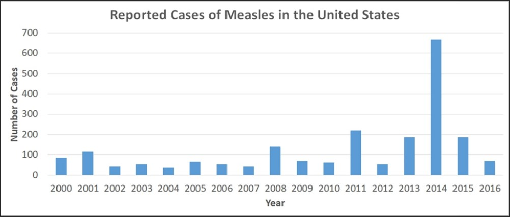
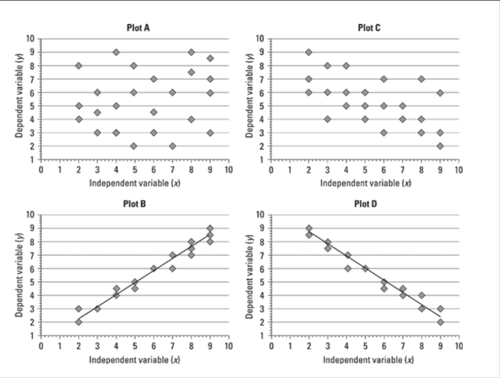

Question 1
Solubility of Salt and Sugar
The following graph shows the amount of salt and sugar that can dissolve in 100 ml of water at a range of temperatures.
Question 2
Reported Cases of Measles in the United States, 2000 - 2016
Question 3
The graph below shows a science experiment in which a sample of ice at -20 degrees C is heated to 120 degrees C. During the experiment, the ice melted into water and then the water boiled and turned into steam.
Question 4
The graph below shows a science experiment in which a sample of ice at -20 degrees C is heated to 120 degrees C. During the experiment, the ice melted into water and then the water boiled and turned into steam.
Question 5
1. Consider the following solution:
200 g of sugar can dissolve in 100 mL of water at 20°C. Approximately how many grams of sugar would dissolve in 100 mL of water at 50°C?
2. Which of the following best expresses the approximate change in number of reported measles cases from 2012 to 2014?
3. Based on the information presented above, which of the following statements is most accurate?
4. Select the area on the graph during which the entire sample consists of liquid water.
5. Which graph shows strong positive correlation between the variables?